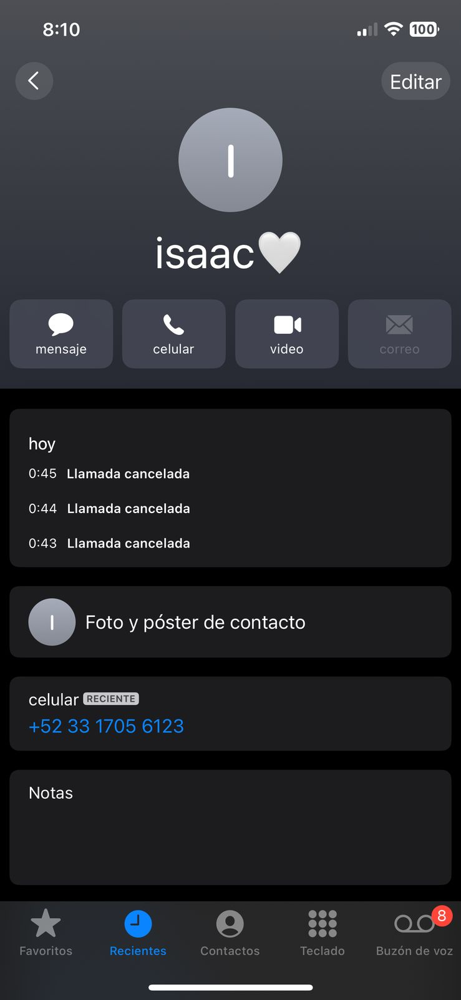

Esta semana me descubrí pensando en ti en momentos donde antes no pensaba en nadie. Mientras iba a la universidad, mientras me bañaba, mientras comía… tú estabas en mi cabeza. No como una distracción, sino como un refugio. Comenzamos a hablarnos con más cariño. Me atreví a halagarte más, y tú, con esa risa tan tuya, lo recibías con una mezcla de sorpresa y ternura. Me hacías sentir que todo lo que decía tenía valor, como si cada palabra que salía de mí construyera algo entre los dos. Empezamos a hablarnos más tarde por las noches, robándole minutos al sueño, solo para seguir compartiendo un poco más de nosotros. Y no sé si lo notaste, pero cada vez que te escribía “aquí estoy”, era mi forma de decirte “me importas más de lo que imaginas”. También me hiciste sentir útil. Cuando dudabas de cómo combinar tu vestido con los tenis y me pedías opinión, fingía analizar... pero por dentro solo pensaba: todo te queda perfecto, porque eres tú. Y lo decía en serio. Esta semana supe que ya no quería retroceder. Que si este lazo que se estaba formando entre nosotros era un riesgo… valía la pena correrlo. Porque tú, Anahí, ya eras algo más que especial para mí. Los audios se volvieron más frecuentes, las confesiones más sinceras. Yo te admiraba y lo expresaba sin miedo. Tu respondías con dulzura, con esa forma tan tuya de querer, suave y honesta. Las horas de sueño se acortaban, pero el amor crecía. La conexión entre tu y yo comenzó a ser más profunda en esta semana. Las palabras se tornaron más sinceras, las confesiones eran más frecuentes y estaban llenas de vulnerabilidad. Yo, al no tener miedo de expresar mi admiración, siento que tu te sentiste quiza aún más especial. Tu, por tu parte, mostraste tu cariño de una manera suave, honesta y llena de ternura. Me di cuenta de que los pequeños gestos, las palabras dulces, las miradas cómplices, todo contaba para construir un amor que trascendía lo físico y se sumergía en lo emocional. A pesar de la falta de horas de sueño, el amor solo crecía más fuerte. La frase destacada, “No te preocupes por dormirme tarde, cada minuto contigo lo vale,” captura perfectamente el sacrificio mutuo que ya estabamos dispuestos a hacer por el otro. El amor no solo se trataba de momentos perfectos, sino de estar allí, incluso cuando las circunstancias eran menos que ideales.
Momentos que derriten:
“No te preocupes por dormirme tarde, cada minuto contigo lo vale,”
Momentos que irritan:
ÑAÑA JAJAJA
